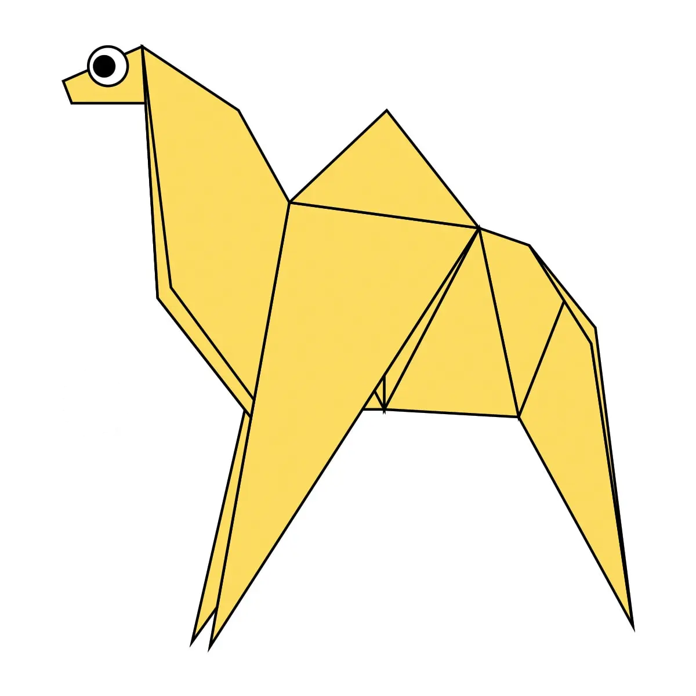
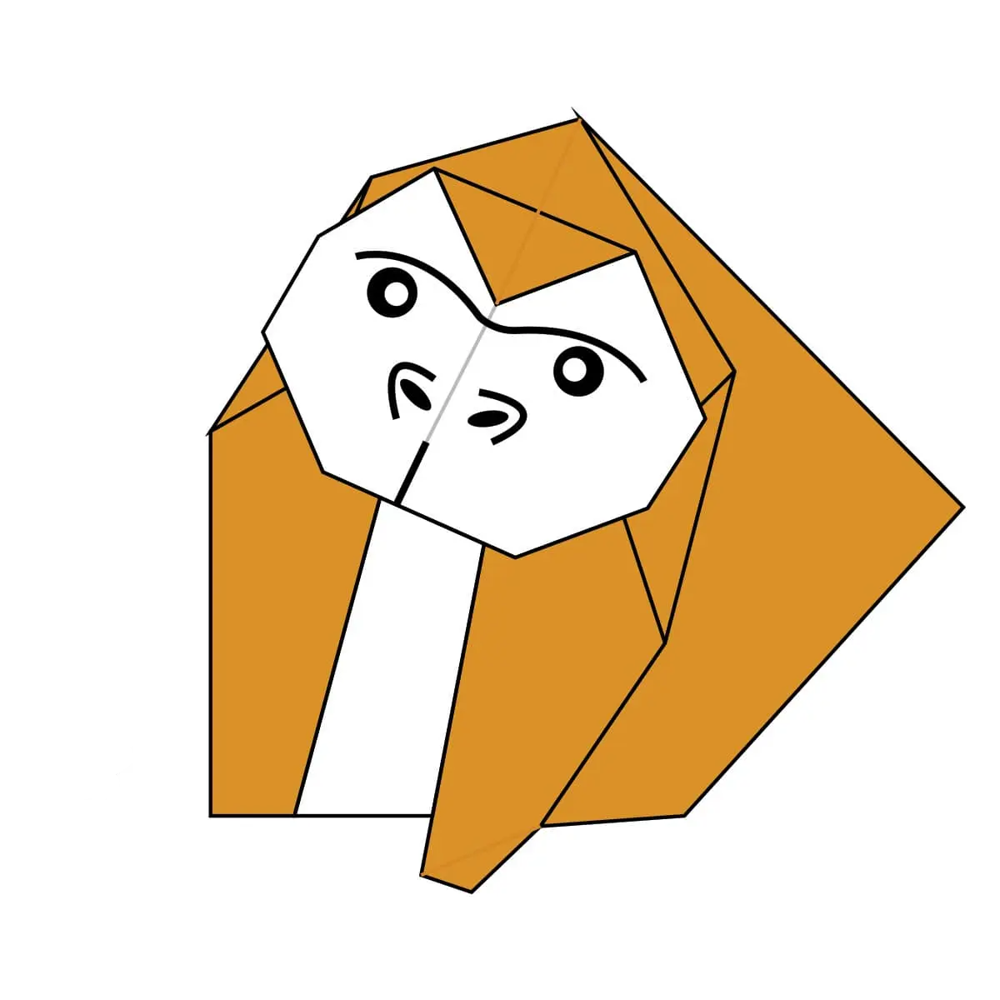
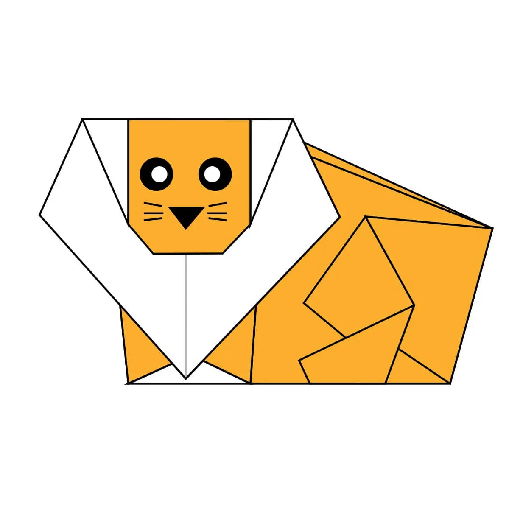
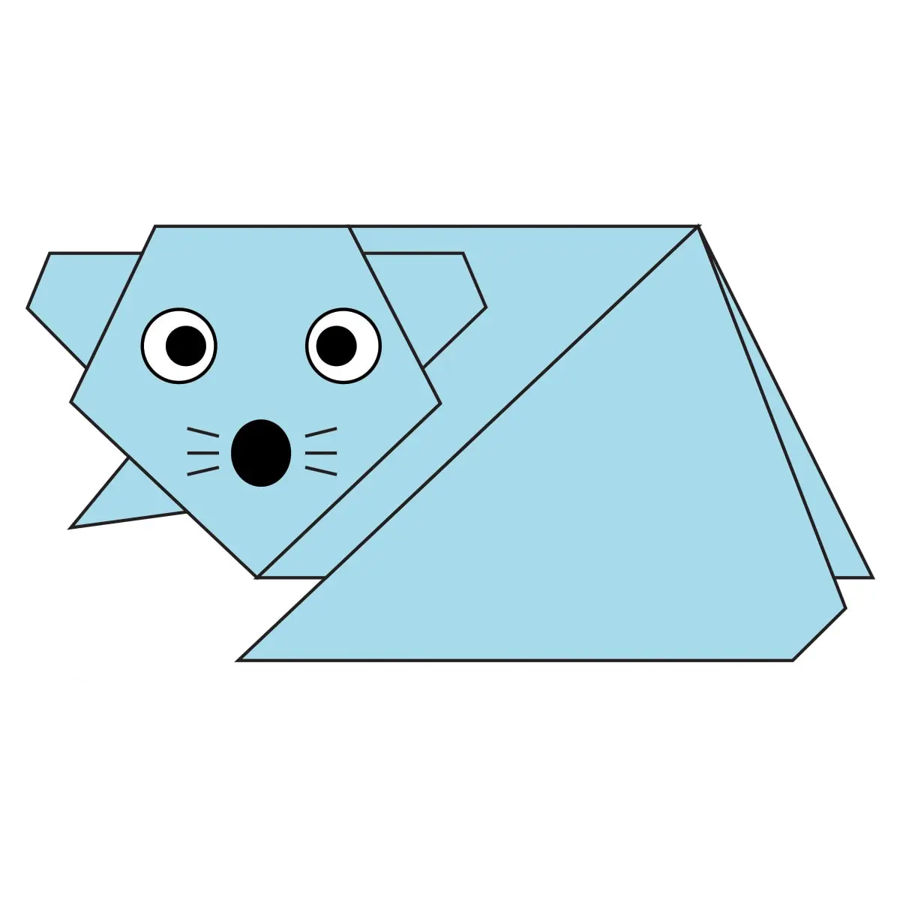
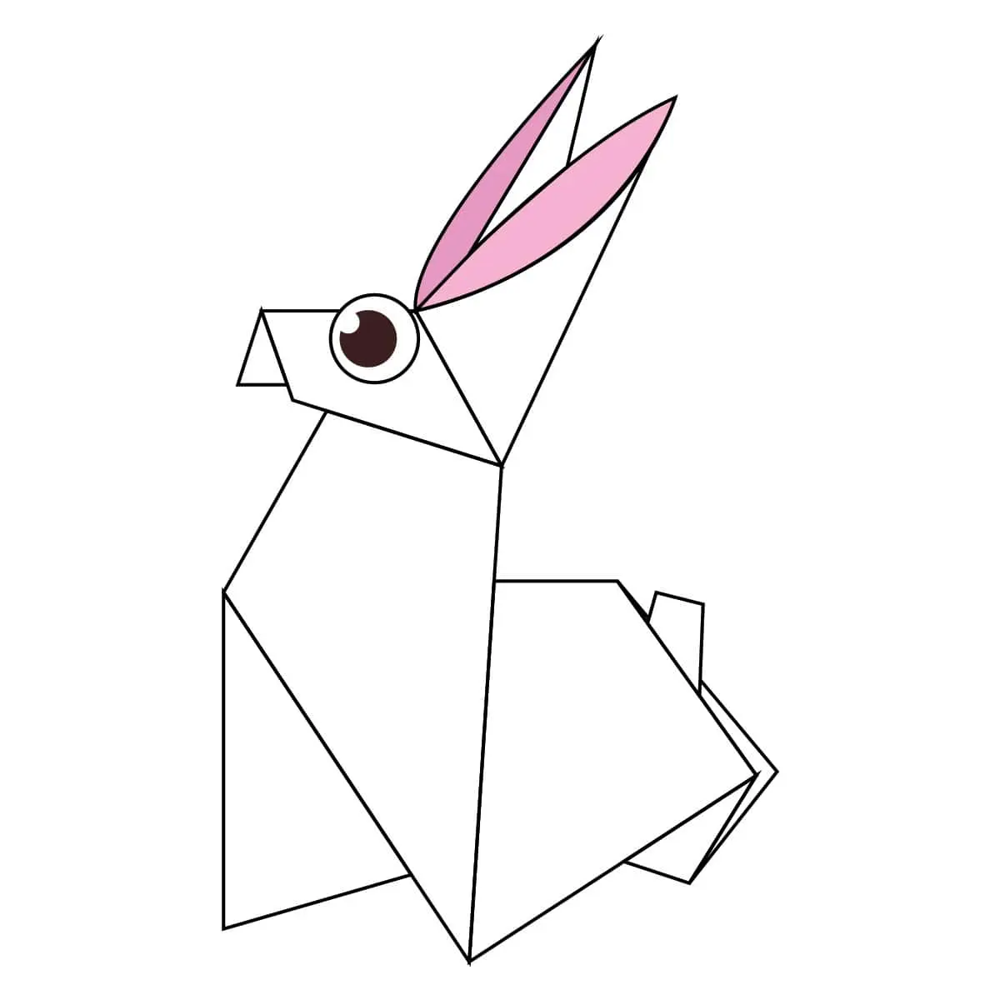
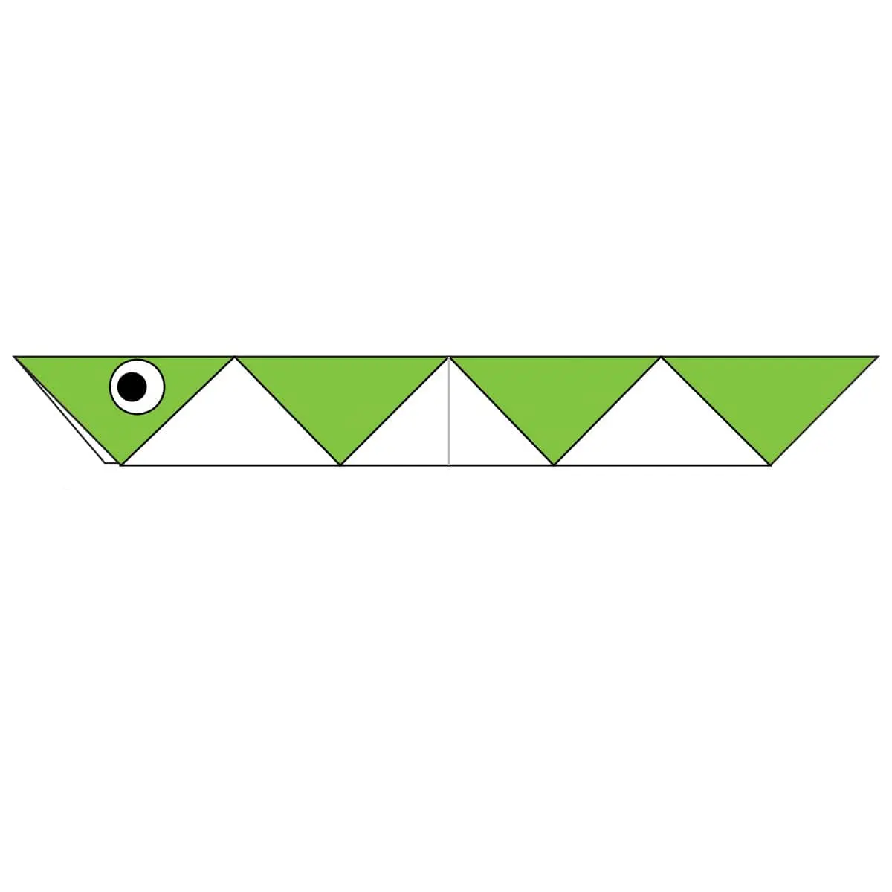
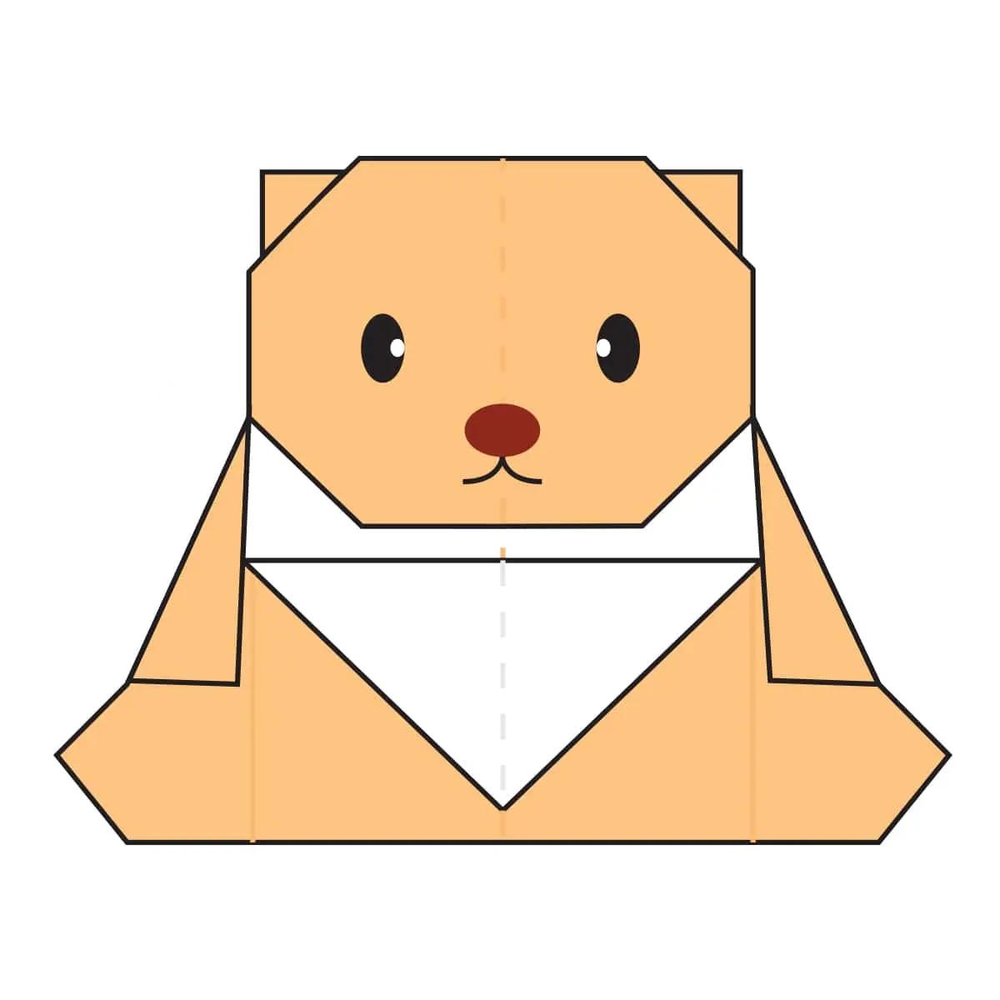

Orgami
About us

Intrusting Facts about camel
Camels are large land mammals best known for their humps.
Camels have a pair of ears and a keen sense of hearing.
Camels have thick lips which let them forage for thorny plants other animals can't eat.

Intrusting Facts about Gorilla
Gorillas have hands and feet like humans including opposable thumbs and big toes.
Gorillas live in small groups called troops or bands.
Gorillas live around 35 years.

Intrusting Facts about Lion
Lions can get their water from plants.
Lions are the only cats that live in groups.
They hunt during storms.

Intrusting Facts about Mouse
Mouse are amazing at high jump.
Mouse have weak eyesight.
Mice can squeeze through the tiniest of gaps!

Intrusting Facts about Peigon
Pigeons are renowned for their outstanding navigational abilities.
Pigeons are incredibly complex and intelligent animals.
Pigeons are highly sociable animals.

Intrusting Facts about Rabbit
Rabbits are very social creatures that live in groups.
A rabbit's teeth never stop growing!
A baby rabbit is called a kit, a female is called a doe and a male is called a buck.

Intrusting Facts about Snake
Snakes smell with their tongues.
Snakes have hundreds of ribs!
Snakes hear using vibrations in their jaw bones.

Intrusting Facts about Teddy Bear
- The world's smallest stitched teddy bear is a mere 0.29 inches tall.
- The Oxford English Dictionary dates the first use of the term teddy bear to 1906.
- There is a dedicated magazine to teddy bears.